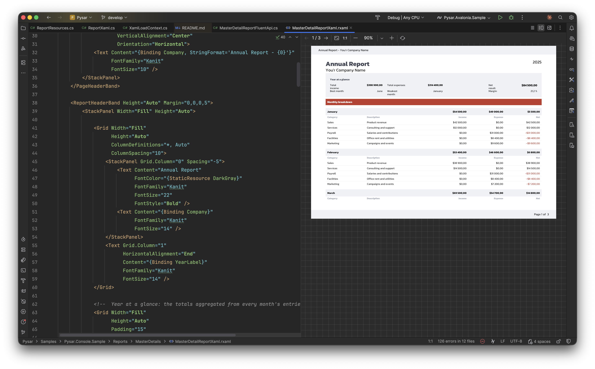
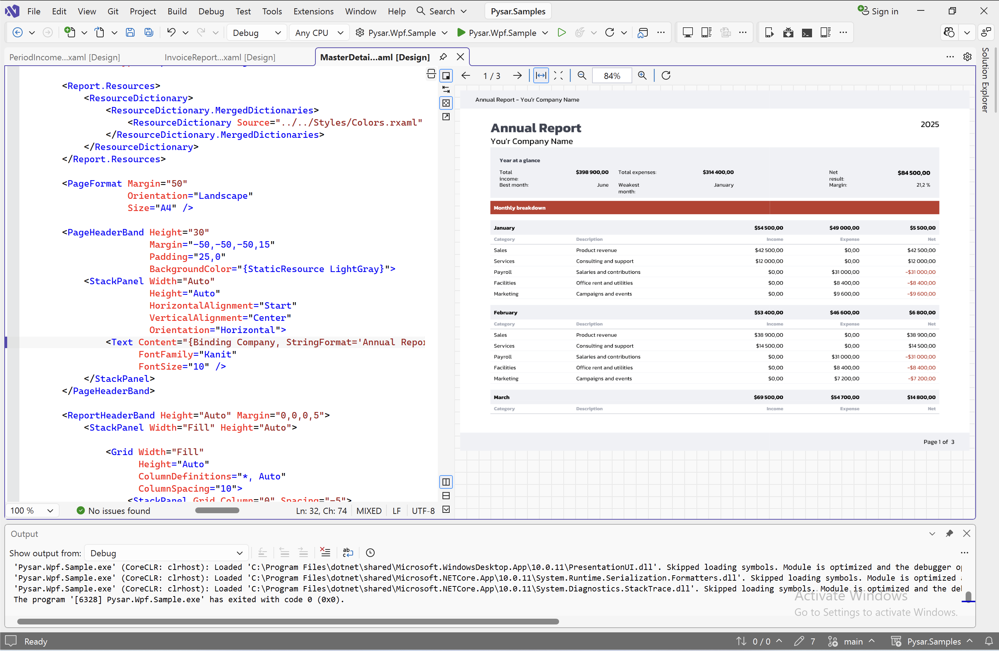
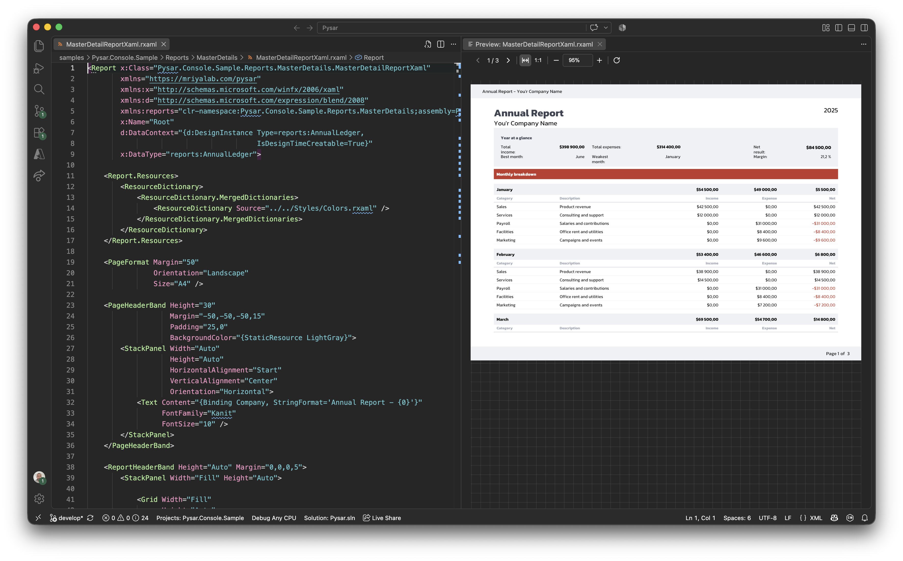

Two plugins. One free, one paid.
.rxaml syntax highlighting is free today, in every editor we support. Pysar.Design is available for Rider on the JetBrains Marketplace, with a 30-day trial.
Pysar (syntax highlighting)
Completely free. No trial, no license.
The Pysar plugin colors .rxaml markup in your editor — elements, bindings, attributes. Nothing is gated, and nothing will be added later that changes that.
Rider
v2026.1.0 · Rider 2026.2
Language support for Pysar RXAML: framework-aware completion, grammar highlighting, bracket matching and code folding.

VS Code
v0.0.3 · manual install
The same .rxaml highlighting inside VS Code, for teams already using it for the rest of a .NET solution.
Visual Studio
not yet available
Syntax highlighting for Visual Studio is on the roadmap — free like the others, no build to install yet.
Pysar.Design
A visual designer for .rxaml reports
Drag, drop and preview bands, repeaters and bindings on a real paginated canvas — the same layout SkiaReportRenderer produces at build time, without leaving your IDE.
Pysar.Design is available for Rider. It's a paid plugin with a 30-day trial on the JetBrains Marketplace, and requires the free Pysar language plugin. Visual Studio and VS Code builds are still in development. Syntax highlighting stays free regardless.



Rider
v2026.1.0 · Rider 2026.2
Design-time preview for Pysar RXAML, rendered with the same SkiaSharp pipeline that produces the PDF.
Visual Studio
not yet available
The same designer for Visual Studio. Likely paid at release — no price set yet.
VS Code
not yet available
The same designer for VS Code. Likely paid at release — no price set yet.
Paginated preview
Step through every page of a report, zoom, and see repeaters and detail bands resolve exactly as they will at render time.
Binding diagnostics inline
The same PQX010 / PQX011 checks the source generator runs at build time surface as editor diagnostics as you type.
Design-time data
Preview against d:DataContext sample data, so the layout is visible before real data exists.